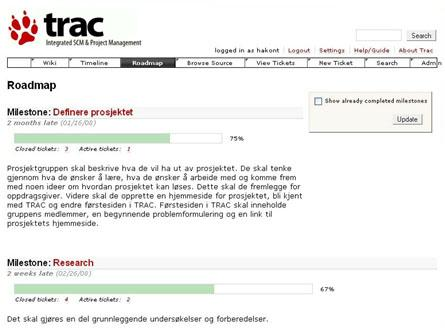

WIKI import
Testing import av WIKI fragments
Trac
Trac er et verktøy som kan brukes i prosjektgjennomføring og andre former for samarbeid mellom mennesker. Verktøyet gir mulighet for å kunne planlegge arbeidet, dokumentere underveis samt i ettertid kunne spore arbeid som er utført. Systemet har en minimalistisk tilnærmingsform, slik at det er et enkelt prosjektstyringsverktøy. I dette ligger det også at systemet er utviklet for i minst mulig grad å påtvinge den eksisterende utviklingsprosessen styrende elementer. Dette kan være en fordel for anvendelse i ulike didaktiske opplegg.
Vi hevder at systemet er egnet for utviklingsoppgaver som prosjekter i næringslivet og prosjekter i undervisningssammenheng, Dette med bakgrunn i den minimalistiske form. Det vil si at de er enkle å inntalere og at terskelen for å kunne anvende verktøyet er lav. Våre resultat viser at selv for førstesemester studenter holder det med en enkel innføring i verktøyene, samt litt veiledning fra studentassistenter.
Verktøyet bruker wiki formatering [3] i sin behandling av tekst som er knyttet til organisering og gjennomføring av prosjekt, så som for eksempel: meldinger, kommentarer, beskrivelser og linker. Dette bidrar til en standardisert form slik at det er mindre risiko for at noen legger inn tekst som de andre i prosjektet kan ha problemer med å se. Det er å bemerke at det selvsagt er slik at vi i prosjektet kan produsere alle slags fileformater, som for eksempel: txt, doc, emx og jpg.
Her vises en klipp av web siden som brukes når vi jobber med Trac:

Figur 3; Typisk eksempel på en oppstartside i et undervisningsprosjekt.
Øverst i figuren er det en samling med funksjoner som finnes i Trac. Denne delen vises hele tiden, mens resten av siden brukes til å vise de data som er knytte til den valgte funksjonen.
Når vi jobber med prosjektlignende oppgaver kan vi når som helst enkelt se alle hendelser som er gjort tidligere i prosjektet og veien videre. Vi kan legge inn elementer som milepæler (milestone), arbeidsoppgaver (ticket) og fritt lage komponenter (som typisk er: forskjellige typer dokumentasjon og programkode). Vi kan også lage relasjoner mellom de forskjellige elementene slik at det er enkelt å spore tilbake i prosjektet.
Vi har prøvd Trac på flere nivåer i studiet. Det er særlig enkelheten i funksjonaliteten som gjør den egnet for bruk i forbindelse med forskjellige didaktiske opplegg. Det at bruk av verktøy kan bidra til at studentene får mer ut av de aktuelle temaer for et kurs, enn at denne type verktøy, bidrar negativt på grunn av sin kompleksitet eller arbeidsmengde, var en positiv erfaring for oss.
Aktuelle kurs
Programmering for web
Kurs for 3.klasse. Programmeringen innebærer: Python, javascript, XSLT. Det skal lages webapplikasjoner.
Programmering for web
Innføring i programmering
Dette er begynnerkurset i programmering for 1.klasse. Javaprogrammering
Innføring i programmering
Møtereferater
der Terje, Mari Ann, Håkon, Børre samles for å utveksle erfaringer.
- 26.september
Håkon, Terje, Børre.
Trolig lurt med hyppige møter i starten (ukentlige)
Gulrot i stedet for pisk når det gjelder bruk av teknikker og verktøy. (form på tickets, paiprogramming, testing, versjonering)
Rollen som "teknisk kyndig kontraktør" er trolig ganske god.
Førstkommende fredag blir det en gjennomgang i forelesningen av testing, sammen med en motivasjon for metodikken.
Det er ikke trivielt å synkronisere prosjekter og faglig progresjon styrt ved forelesninger. XP fordrer i en viss forstand at det faglige repetoiret er på plass tidlig.
- børre -
- 8. oktober
Tilstede: Børre, Håkon, Terje, Mari-Ann
Grupper er fordelt og tracer opprettet. SVN frivillig, og vil demonstreres av gruppelærerne hvis noen av gruppene viser interesse for det. Studentene tar kontakt med sin oppdragsgiver og avtaler møte. Møte hver uke i oppstarten, kan deretter se det litt an.
I forhold til rekkefølgen for gjennomgang av emner i kurset, passer det å starte med å la studentene lage en rapportmal (html), og deretter få på plass en klasse med metoder for å lese en mal, putte inn verdier for variablene i malen og lagre resultatet.
Noen har lite kjennskap til HTML. Lars Magnusson gir en introduksjon i øvingstimene denne uka.
Mari-Ann
- 15. oktober
Tilstede: Børre, Håkon, Terje, Mari-Ann
Fint å se de andre veilederne sine notater før egen veildening. Ulik nivå på grupper og medlemmer.
Børre kort referat fra midtsem. eval. Alle rimelig fornøyde. Ulik bruk av verktøyenes funksjonalitet. Prosjektene må bli ferdig. Oppdragsgiver sitt ansvar å ha en fungerende versjon. En gruppe som mener at oppdragsgiver drar prosjektet i gal retning.
Ta en oppsumerende samtale med gruppa om roller, fremdrift og nivå. Hvordan håndteres refactoring i gruppene.
Metoden kan også brukes til å ta tak i arbeidsmetoder, f.eks. at de følger gruppeundervisning og forelesninger.
Håkon Tolsby
- 29.oktober
Tilstede: Mari Ann, Håkon, Børre
Artikkel. Beholder strukturen som den ligger. Skriver fritt. Børre ber Ted å lage 4 nye brukere slik at vi er identifiserbare. Sender mail når dette er i orden.
Intervjuer. Vi tar sikte på å intervjue 2 grupper hver, en gruppe fra hvert kurs. Håkon lage et forslag til setting og rammer for spørsmål. Mari Ann og Børre varsler dette som del av kursevalueringen i de respektive kursene.
- børre -
- 12.november
Tilstede: Mari Ann, Håkon, Børre, Terje
Temaet for møtet var undersøkelsen av den pedagogiske modellen. Undersøkelsen skal gjennomføres i uke 47 og 48. Håkon la frem en plan for gjennomføringen. Det er viktig at alle legger inn aspekter som de ønsker å få studentene til å fortelle om i gjennomføringsplanen. Det ble avtalt et nytt møte fredag 16. november for gjennomføre en testing av intervjusituasjonen
Gjennomføringsplan
_håkon
- 19.november
Tilstede: Mari Ann, Håkon, Børre
Enighet om artikkel. Fordeling av resterende arbeid.
bs
- 3.desember
Tilstede: Mari Ann, Håkon, Børre
Enighet om artikkel. Fordeling av resterende arbeid.
bs
- 18.desember
Introspektiv intervju
Bruk tid på å forberede dere før intervjuet.
Børre og Mari-Ann intervjuer Terje og Håkon Terje og Håkon intervjuer Børre og Mari-Ann
Intervjuguide
- 18.desember
Intervjuer gjennomført, 0900 - 1200
Vi har fått penger 200.000 til prosjektet.
Planer videre:
- Skrive ut intervjuene. Håkon undersøker om vi kan få hjelp
- Lage stoff for interne nyheter, Terje
- Rekruttere til eksernt kurs. Børre sjekker
- Vi lager en fyldig intern rapport med alt vi har av erfaringer, tanker og intervjustoff, alle
- Vi planlegger en faglig rapport eller to, Håkon ser etter et godt publiseringssted
- Vi lager en håndbok for veiledere, alle
- Vi må oppdatere NU-rapporten i januar hvis den blir godtatt, alle
- Vi må drive litt internt misjonsarbeid, spesielt hvis det blir aktuelt med ny studieplan. Personalmøte eller egen forestilling.
børre s
- 23.januar
Tilstede: Mari Ann, Håkon, Terje, Børre
Oppsummering og arbeidsfordeling.
Vi har mottatt:
- Tildelingsbrev for prosjektet
- Tilbakemelding på artikkelforslag.
Prosjektet handteres slik:
- Tore Petter Engen fyller ut nødvendige formalia og returnerer avkrevd skjema.
- Børre S lager utkast til brev for å få igang kurs med eksterne deltagere.
- Vi må forberede presentasjon til seminar i Tromsø. Materialet for dette har vi trolig klart, men vi vil få nærmere kravspesifikasjon i mars.
Artikkelen handteres slik, alt skal være ferdig 10.mars:
- Håkon T tar ansvar for å skrive sammenhengen mellom mapper og XP-metodikk.
- Terje S tar ansvar for å beskrive verktøyene (Trac, SVN) bedre.
- Mari-Ann A tar ansvar for å restrukturere og forsterke de foreløpige analysene.
børre s
- 5.mars
Tilstede: Mari Ann, Håkon, Terje, Børre
Status artikkel.
Litt diskusjon om struktur:
- trenger illustrasjon av verktøy (milepæl, ticket)
- liste av hovedpunkter i oppsummeringen: rytme og tempo, forpliktelser, oppdragsgiverrollen, arbeidsdeling og koordinering, transparens, refleksjon.
- klargjøre hva som kan gjøres og hva som er gjort med tanke på formell og uformell evaluering av prosess.
Innholdet må i hovedsak være klart mandag 10.mars. Vi ber om utsettelse til 14.mars for innlevering.
Transkriberingene tikker inn.
Vi må passe på å søke om FoU tid til fortsettelse av prosjektet.
børre s
- 10.mars
Tilstede: Mari Ann, Håkon, Terje, Børre
Status artikkel.
Litt diskusjon om struktur.
Vi må passe på å søke om FoU tid til fortsettelse av prosjektet(bs).
Vi må lage vevside for prosjektet og fylle ut skjema i forbindelse med Tromsø-møtet.
børre s
- 7.april
Tilstede: Mari Ann, Håkon, Terje, Børre
Følgende skal skje:
- Ekstern kurs (Børre må ta seg sammen)
- Samlerapport. Mari-Ann er redaktør. Sier hva vi skal gjøre:
- Vi skriver to intervjuanalyser hver. Forsøksvis ferdig i april
- Metodebok. Terje skriver på delen om praktisk bruk av verktøy
- Webside for prosjektet. Børre fyller inn noe mer.
- Håkon kontakter Pettersen/Lauvås om samarbeid
- Håkon anviser utbetaling av penger fr intervjutranskripssjon
- Intervju av to hovedprosjektgrupper.
- Terje og Håkon intervjuer Børres gruppe
- Terje og Børre intervjuer Håkons gruppe
børre s
- 20.mai
Tilstede: Mari Ann, Håkon, Terje, Børre
Fordeling av arbeid i forbindelse med presentasjon av prosjektet på personalmøtet.
børre s
- 18.juni
Tilstede: Mari Ann, Håkon, Terje, Børre
Fordeling av arbeid i forbindelse med skriving av samlerapport. MA lager en ny wiki-side med disposison og arbeidsdeling.
Håndbok lages etter, og på grunnlag av, samlerapporten.
Minst 1 vitenskaplig rapport initieres underveis.
Disponering av prosjektmidler tas opp etter sommeren.
børre s
- 25.september
Tilstede: Mari Ann, Håkon, Terje, Børre
Planlegging av søknad. Intern frist for første runde 11.oktober.
Håkon og Børre skriver utkast på grunnlag av møtet.
børre s